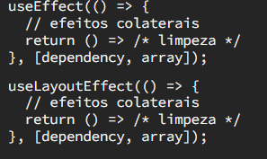
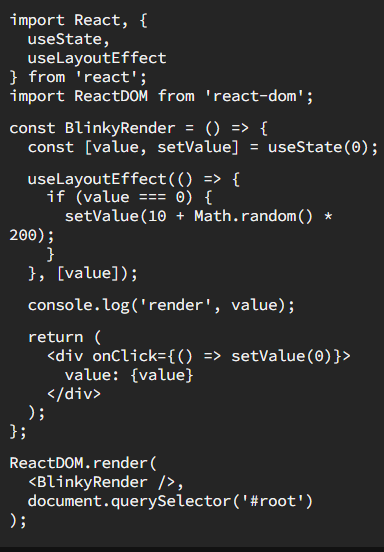

useLayoutEffect
Existem dois hooks no React useEffect e useLayoutEffect, que parecem funcionar praticamente da mesma forma.
A maneira como você os chama parece a mesma:

Mas eles não são exatamente iguais. Vamos ver o que os torna diferentes e quando usar cada um. (tl; dr: na maioria das vezes você quer o useEffect)
A diferença entre o useEffect e useLayoutEffect
É tudo sobre o tempo certo de execução.
useEffect é executado de forma assíncrona e depois que uma renderização é pintada na tela.
Então isso se parece com:
- Você causa uma renderização de alguma forma (altera o estado ou o componente pai é renderizado novamente)
- React renderiza seu componente (chama seu componente)
- A tela é visualmente atualizada
- SÓ ENTÃO useEffect é executado
useLayoutEffect, por outro lado, é executado de forma síncrona após uma renderização, mas antes da atualização da tela. Significa:
- Você causa uma renderização de alguma forma (altera o estado ou o componente pai é renderizado novamente)
- React renderiza seu componente (chama seu componente)
- useLayoutEffect é executado e o React aguarda seu término
- A tela é visualmente atualizada
99% do tempo, useEffect
Na maioria das vezes, seu efeito está sincronizando algum estado ou objeto com algo que não precisa acontecer IMEDIATAMENTE ou que não afeta visualmente a página.
Por exemplo, se você estiver buscando dados em um servidor, isso não resultará em uma alteração imediata.
Ou se você estiver configurando um manipulador de eventos.
Ou se você estiver redefinindo algum estado quando uma caixa de diálogo modal aparecer ou desaparecer.
Na maioria das vezes, useEffect é o caminho certo a percorrer.
Quando usar useLayoutEffect
Qual é o momento certo para usar useLayoutEffect? Você saberá quando ver. Literalmente ;)
Se o seu componente pisca quando o estado é atualizado — como em, ele é processado primeiro em um estado
parcialmente pronto e depois é renderizado novamente em seu estado final — essa é uma boa pista de que é hora de
trocar useLayoutEffect.
Aqui está um exemplo (artificial) para que você possa entender o que quero dizer.
Quando você clica na página([A]), o estado muda imediatamente (value é redefinido para 0), que renderiza novamente
o componente e, em seguida, o efeito é executado — que define o valor para algum número aleatório e é renderizado
novamente.
O resultado é que duas renderizações acontecem em rápida sucessão.

[A]: Em geral, colocar manipuladores onClick em divs é ruim para acessibilidade (use botões!), esta é uma demonstração descartável. Eu só queria mencionar isso!
Experinte as duas versões:Observe como a versão useLayoutEffect atualiza visualmente apenas uma vez, mesmo que o componente tenha sido renderizado duas vezes. A versão useEffect, por outro lado, é renderizada visualmente duas vezes, onde você pode ver o valor é 0 brevemente.
Devo usar o useEffect ou use o useLayoutEffect?
Na maioria das vezes, useEffect é a escolha certa. Se o seu código estiver causando oscilações na renderização, mude para useLayoutEffect e veja se isso ajuda.
Como useLayoutEffect é síncrono (bloqueia a renderização), o aplicativo não será atualizado visualmente até que o efeito termine de executar … isso pode causar problemas de desempenho se você tiver um código lento no seu efeito. Juntamente com o fato de que a maioria dos efeitos não precisam que o mundo faça uma pausa enquanto acontecem.
Exemplos na pratica